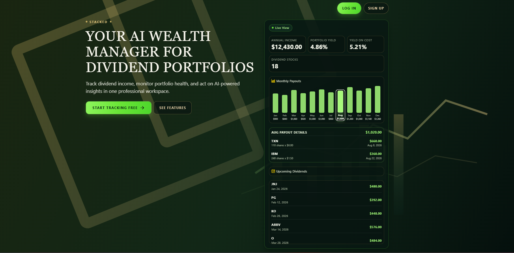
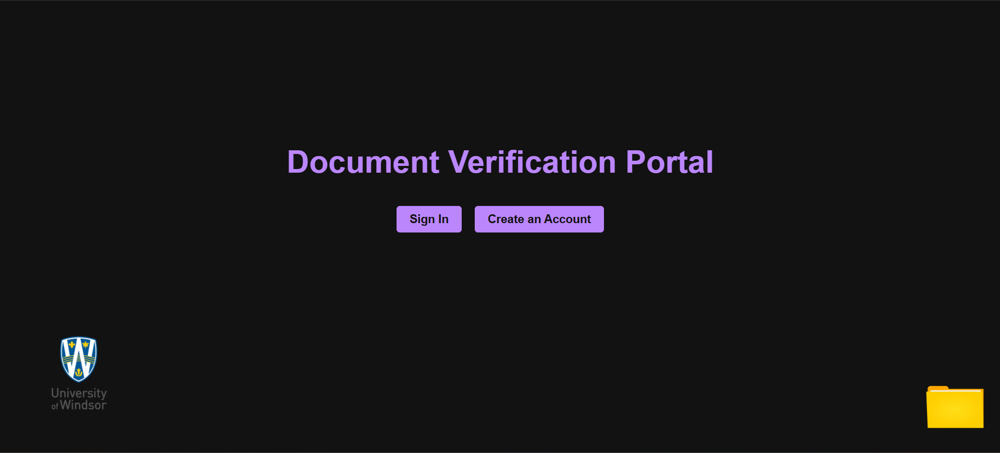
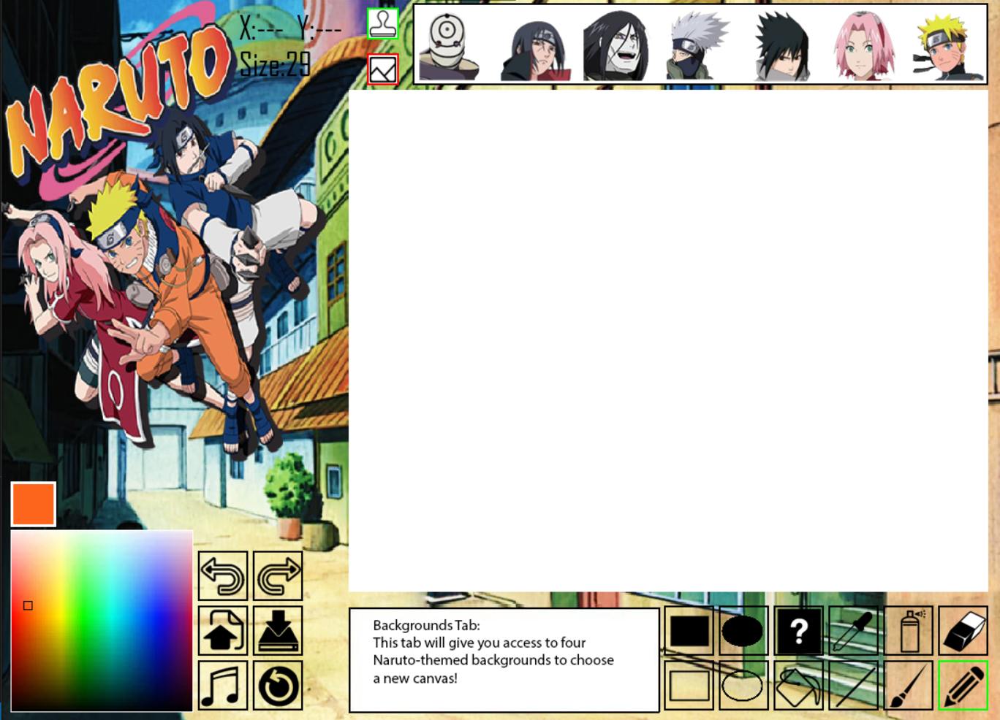

Managed end-to-end onboarding and offboarding workflows including provisioning, Intune enrollment, device configuration, mailbox conversion, and access revocation.
Projects

Live Product
STACKED
A dividend and portfolio tracker built to turn passive holdings into clearer decisions. The product combines portfolio monitoring, income tracking, and real-time market data in one React Native experience instead of forcing users back to spreadsheets.
- Built with React Native, TypeScript, and Supabase, with Row Level Security to keep user portfolio data isolated and secure.
- Added OpenAI-powered insights and Yahoo Finance data so the app does more than display numbers; it helps users understand what is changing in the portfolio.
React Native
TypeScript
Supabase
OpenAI API
Yahoo Finance API
Vercel

Security + Integrity
Document Verification Platform
Built for academic credential verification, where a document is only useful if its authenticity can be proven. The platform hashes uploaded files, records proofs on-chain, and gives users a simple workflow to confirm whether a document has been altered.
- Connected a Django application to a Ganache-based blockchain environment through Web3.py so uploads and verification could happen through a normal web interface.
- Used SHA-256 hashing and re-upload verification to compare stored blockchain records against submitted files and flag authentic versus inauthentic documents.
Django
Web3.py
Ganache
Solidity
SQLite

Personal Finance
Loan Repayment App
An Android app designed to make student debt less opaque and more manageable. Instead of stopping at a basic calculator, it combines repayment planning, budgeting, reminders, and educational resources so users can decide what to pay and when.
- Used Firebase Auth and Firestore to support sign-in, saved profiles, budgeting data, and personalized loan repayment settings.
- Built repayment simulations, extra-payment planning, charts, due-date notifications, and a Canada-focused resource hub to turn the app into a practical decision tool.
Java
Android Studio
Firebase Auth
Firestore
MPAndroidChart

Desktop UX
MS Paint Rework
A Naruto-themed remake of MS Paint focused on making a small desktop project feel polished and usable. The work went beyond basic drawing tools and pushed into the details that make a desktop app feel responsive instead of purely academic.
- Expanded the toolset with spray paint, stamps, backgrounds, undo and redo, save and load, music controls, and improved rectangle and ellipse behavior.
- Focused on usability details like active-tool highlighting, mouse position feedback, size previews, palette state, and cleaner canvas interaction to reduce user confusion.
Python
Pygame
Desktop UI